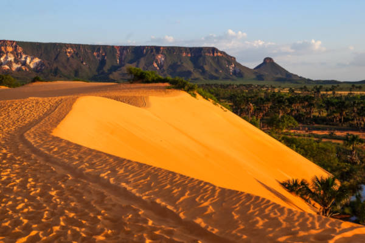
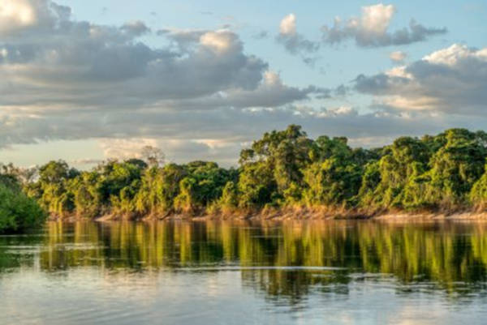
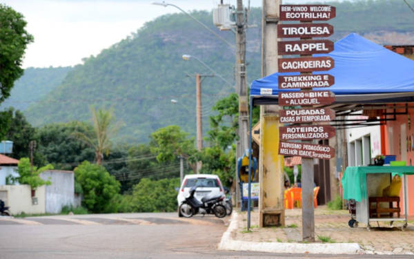

O Tocantins é um estado repleto de belezas naturais, rios, cachoeiras e paisagens incríveis. Conheça alguns dos principais pontos turísticos do estado.
Um dos destinos mais famosos do Brasil, conhecido pelas dunas, cachoeiras e fervedouros.

O Parque Estadual do Cantão é uma importante área de preservação ambiental. O local abriga uma grande variedade de espécies animais e vegetais, sendo um dos principais destinos do ecoturismo no estado.

Taquaruçu é um distrito localizado próximo à cidade de Palmas. O lugar é conhecido pelas inúmeras cachoeiras, pelo clima agradável e pelas atividades ligadas ao turismo de aventura.
